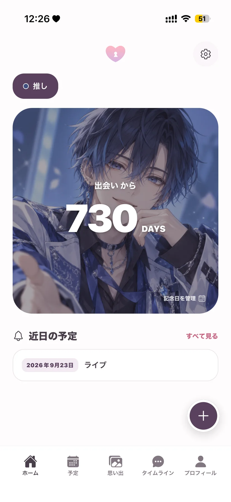
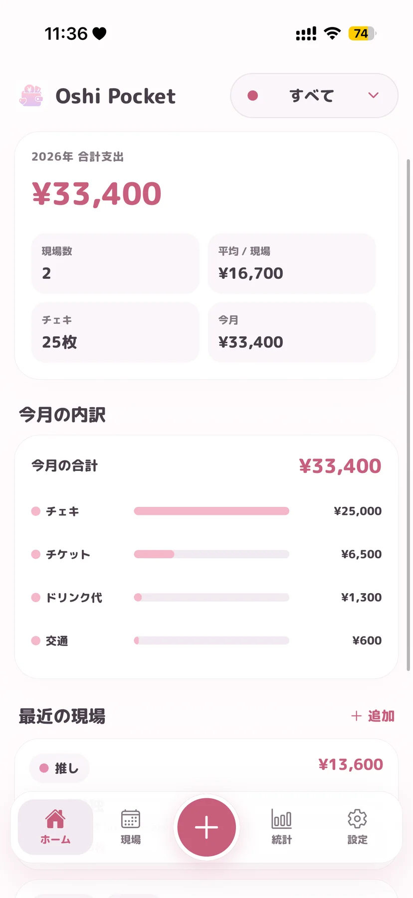
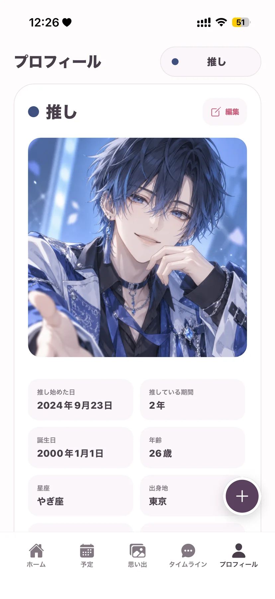

記念日と予定紀念日與日程Dates and memories

思い出は OshiLove、現場と支出は OshiPocketOshiLove 珍藏回憶，OshiPocket 整理活動與開支OshiLove for memories, OshiPocket for events and spending
推しとの写真、記念日、現場の記録に推し，即您喜愛的偶像或角色Your oshi is the idol or character you love supporting
アカウント登録不要 · 記録は端末内に毋須註冊帳戶 · 記錄儲存在裝置內No account needed · Your records stay on your device
記念日と予定紀念日與日程Dates and memories

現場と支出活動與開支Events and spending

OshiLove
予定、記念日、日記、写真をひとつに集中整理日程、紀念日、日記與相片Plans, anniversaries, diary entries and photos in one place

OshiPocket
ライブや特典会の予定と費用をまとめて記録集中記錄演出、特典會及相關費用Track live events, meet-and-greets and their costs
思い出を見返すなら OshiLove、現場の費用を把握するなら OshiPocket。目的に合わせて両方使うこともできます想回顧相片與日記，選 OshiLove；想掌握每次活動使費，選 OshiPocket，亦可按需要同時使用兩款Choose OshiLove to revisit memories, OshiPocket to track event costs, or use both for different needs
写真・日記・記念日を残したい方に適合記錄相片、日記與紀念日For photos, diaries and anniversaries
現場・支出・統計を管理したい方に適合管理活動、開支與統計For events, spending and insights
それぞれ独立したアプリです。同じ記録が両方に自動で反映されるものではありません兩款是獨立 App，記錄並不會自動在兩款 App 之間同步The apps are independent; records do not automatically sync between them
OshiLove は予定・日記・写真・記念日の記録に、OshiPocket は現場と支出の管理に向いています。それぞれ独立したアプリですOshiLove 用於記錄日程、日記、相片和紀念日；OshiPocket 用於管理活動與開支，兩者是獨立 AppOshiLove records plans, diaries, photos and anniversaries. OshiPocket manages events and expenses. They are separate apps
両アプリとも iOS 15.1 以降に対応しています。端末ごとの互換性と配信地域は各 App Store ページでご確認ください兩款 App 均支援 iOS 15.1 或以上，個別裝置相容性及供應地區請查看對應 App Store 頁面Both apps require iOS 15.1 or later; check each App Store listing for device compatibility and regional availability
どちらのアプリも、アカウント登録なしで始められます兩款 App 均毋須註冊帳戶即可開始使用Neither app requires an account to get started
はい。どちらのアプリも複数の推しを登録し、推しごとに記録を整理できます可以，兩款 App 均可加入多位推し，並按推し整理記錄Yes. Both apps support multiple oshis and organise records by oshi
設定の表示設定から通貨記号とテーマカラーを変更できます可在設定的顯示設定更改貨幣符號及主題顏色Change the currency symbol and theme colour in Display Settings
記録は端末内に保存されます。詳しくは各アプリのプライバシーポリシーをご確認ください記錄儲存在您的裝置內，詳情請參閱各 App 的私隱政策Records are stored on your device. See each app's privacy policy for details
OshiLove は設定から手動バックアップを作成できます。OshiPocket は設定のデータ管理から JSON バックアップを書き出し、復元できます。機種変更前にバックアップを安全な場所へ保存してください。OS のバックアップからの復元結果は端末設定により異なりますOshiLove 可在設定建立手動備份；OshiPocket 可在設定的資料管理匯出及還原 JSON 備份。換機前請將備份保存至安全位置，系統備份能否還原則取決於裝置設定OshiLove supports manual backups in Settings; OshiPocket can export and restore JSON backups through Data Management. Save a backup securely before changing devices; operating-system restoration depends on device settings
アプリを削除すると端末内のアプリデータも通常削除されます。先に必要なバックアップを保存してください。OshiLove を削除しても写真アプリ内の元写真は削除されません刪除 App 通常亦會刪除裝置內的 App 資料，請先保存所需備份。刪除 OshiLove 不會刪除相片圖庫內的原始相片Uninstalling normally removes the app’s on-device data, so save a backup first. Uninstalling OshiLove does not delete originals from your photo library
両アプリとも無料でダウンロードできます。追加の購入や Premium の内容・価格は、各アプリの購入画面で確認してからお選びください兩款 App 均可免費下載，額外購買及 Premium 功能與價格請先查看各 App 內的購買畫面Both apps are free to download; review optional purchases, Premium features and current prices in each app before buying
各アプリの設定にある購入の復元をご利用ください。購入時と同じ App Store アカウントでサインインしてください。購入の復元と記録データの復元は別の操作です請在各 App 設定使用還原購買項目，並登入購買時相同的 App Store 帳戶。還原購買項目與還原記錄資料是兩項不同操作Use Restore Purchases in the app’s settings with the same App Store account used to buy. Restoring purchases and restoring your recorded data are separate actions
iPhone の設定から Apple Account → サブスクリプション → OshiPocket を開いて解約できます。アプリを削除するだけでは解約されません。請求や返金については App Store の購入履歴とサポートをご確認ください在 iPhone 設定開啟 Apple Account → 訂閱項目 → OshiPocket 取消；只刪除 App 不會取消訂閱。收費或退款請查看 App Store 購買紀錄及支援Open iPhone Settings → Apple Account → Subscriptions → OshiPocket to cancel. Deleting the app does not cancel a subscription. Check App Store purchase history and support for billing or refunds
端末の写真アクセス権限と元写真をご確認ください。選択した写真のみを許可している場合は対象写真を追加してください。機種変更後は元写真を新しい端末にも用意し、必要に応じて再接続してください請檢查裝置相片權限及原始相片；如只允許所選相片，請加入需要顯示的相片。換機後亦須將原始相片同步至新裝置，並按需要重新連結Check photo permissions and the original images. With limited access, add the photos you want to display. After a device transfer, make the originals available on the new device and reconnect them if needed
iOS
配信状況は、お住まいの地域の App Store でご確認ください。供應情況請以您所在地區的 App Store 為準。Check your local App Store for availability.